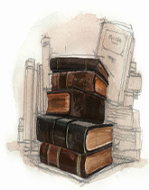

《了不起的盖茨比》
 在《了不起的盖茨比》中，作者菲茨杰拉德选择尼克·卡洛韦作为叙述人，以“只有被追求者和追求者，忙碌者和厌倦者’的身份和口吻孜孜不倦地讲述着盖茨比和黛茜之间的爱的故事——其实尼克充当了小说故事的第一叙述人，面向的是读者；菲获杰拉德充当了小说故事的隐性或间接叙述人，是一个万能叙述人；而盖茨比则充当了小说的一号男主人公兼及小说中讲故事的第三叙述人，面向的是自己。小说家菲茨杰拉德的声音始终贯彻在尼克和盖茨比声音之中，并贯穿始终。 叙事学框架下的盖茨比是一个了不起的“美国往事“的叙述，看似是对盖茨比和黛茜的个人故事的挽歌式的叙述，实则是对一段美国宏大历史焦虑的叙述。 这个故事框架下盖茨比的个人经历是作家菲茨杰拉德对大萧条时期之后的“爵士时代”的一个不安的叙述：它刻录着“爵土时代”及其伴随着这个时代所发生的一切，具有深到的社会普遍代表性和认识价值。这个叙述从盖茨比的豪宅到美国人的梦想，都可被视为是对了不起的“美国往事”的一个忧伤而优美的文学追述，好似一只”驶向未来的船，却也无休止地梦回过去。”他从个人情感和理想入手将盖茨比塑造为一个当代英模式的、不切实际的、满脑子对世界充满虚幻梦想的、自认为是绅士派头的、幽灵式的性格，仿若19世纪俄罗斯文学中的“多余的人”，从而使整个作品仿若19世纪奥地利作曲家莫扎特的“安魂曲”——一首20世纪“爵士时代一美国梦”的安魂曲。
首先，《了不起的盖茨比》中的讲述人尼克是相对于作家菲茨杰拉德所塑造的读者喜欢的那种叙述人，也是一个“个人化的”，“自叙述的”叙述人，因为他不仅在故事之内，而且还担任主要角色。他是一个出众的人物，具有优良的个人品质。不仅如此，这个个性化的叙述人是作家本人的声音，同时也是叙述人尼克向读者讲述的声音。借此，尼克讲述着自己的个人历史、故事——1915年毕业于纽黑文，参加了第一次世界大战，1922年又去了东部学金融，而后利用假期来到纽约，观察并侦探盖茨比及其从中历折射出的、当时美国整个爵士世界时尚而消费的社会历史情形。他对周围的世界和人充满了极度的天真的好奇心和敏锐的观察力，尤其“愿意和他人分享他所知道的有关秘闻和隐私”，包括自己的故事；他有着完整的身份———个来自于美国中西部的部落家族第三代传人。叙述人尼克巧效地拉开了叙述者与他本人的距离，以利于作品故事的被叙述；借此叙述，叙述人尼克直接端出了自己的观点；他比主人公盖茨比知道得多；他的叙述是“内在聚焦的”。也就是说，这个故事是由尼克从他这个固定的角度讲述的，并渗透着他个人的观点。 尼克还同时身兼“局外异叙述的”题述人，因为在某种程度上他不在自己叙述的故事之中。作为一个旁观者，他与盖茨比联手奠定了一个典型的美国20世纪20年代的爵士时代的挽歌式的神话叙事格调，叙述了两个或两个以上的结构叙述内容，更值得注意的是，小说的结构叙述的大目的和大叙述显然是由几个严肃庄重而非轻薄的目的和次主题构成的：一是弥漫着些许神秘气息的罗曼司；二是极度的富有与美貌以及被满足了的穷奢极欲；三是爱的幻觉和强烈的地域感。其中有着对盖茨比与黛茜罗曼司的、有着对盖茨比寓所的漂亮花园和豪华派对的、还有着对盖茨比葬礼的等等精神内容活动的叙述，尤其通过派对作为一种社会文化在美国中西部或整个美国的日益盛行，显现出美国的时代精神构成和走向。